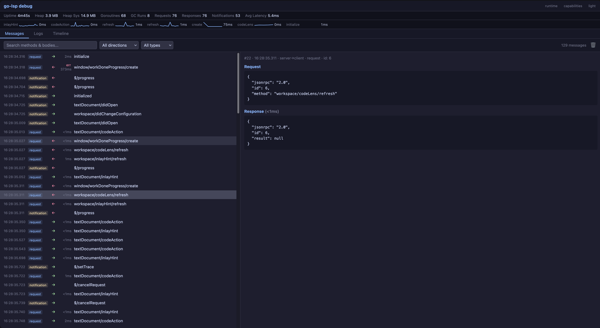
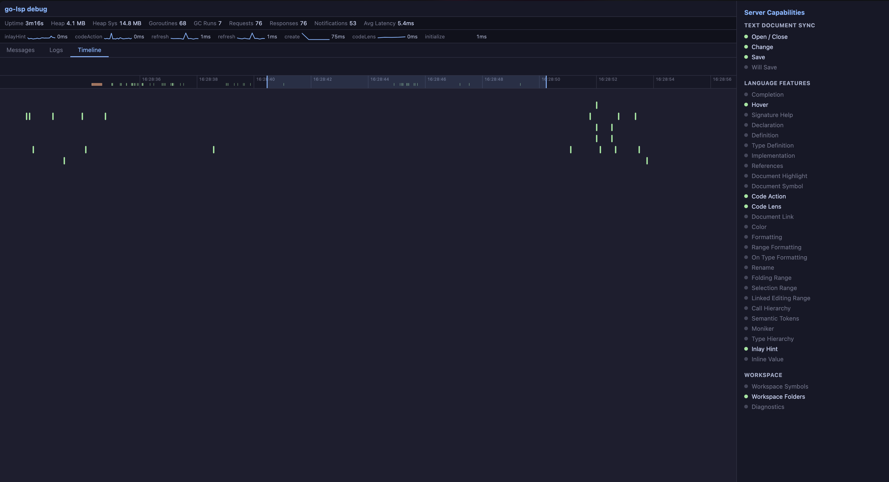

Messages
Requests, responses, notifications, JSON payloads, search, filters, and request/response pairing.
Inspect live LSP traffic, logs, timelines, advertised capabilities, and export traces.
srv := server.NewServer(h, server.WithDebugUI(":7100"))
srv.Run(ctx, server.RunStdio())Open http://localhost:7100 while the server is running.
If the HTTP listener cannot bind (port in use, restricted environment), the server logs a warning and continues with capture-only mode. WithDebugUI therefore never prevents the LSP from starting; trace export still works against the in-memory recorder.
For support bundles or always-on trace export without binding an HTTP port, use WithDebugCapture:
srv := server.NewServer(h, server.WithDebugCapture())WithDebugUI implies WithDebugCapture, so you only need one or the other. Both populate the same recorder, which powers SaveDebugTrace and ExportDebugTrace.
Requests, responses, notifications, JSON payloads, search, filters, and request/response pairing.
Waterfall view of request latency with slow request highlighting and method-level timing.
Structured logs and window/logMessage notifications in one view.

SaveDebugTrace writes a snapshot of the captured session. Call it from a custom LSP command, signal handler, or debug endpoint after reproducing an issue.
err := srv.SaveDebugTrace("/tmp/mylang.trace.json", server.TraceExportOptions{
RedactDocumentText: true,
RedactFilePaths: true,
Pretty: true,
})Use ExportDebugTrace to get JSON bytes instead. If neither WithDebugCapture nor WithDebugUI is enabled, both methods return server.ErrDebugTraceUnavailable.
func (h *Handler) ExecuteCommand(ctx context.Context, params *lsp.ExecuteCommandParams) (any, error) {
if params.Command != "mylang.generateDebugBundle" {
return nil, nil
}
path := filepath.Join(os.TempDir(), "mylang.trace.json")
err := h.srv.SaveDebugTrace(path, server.TraceExportOptions{
RedactDocumentText: true,
RedactFilePaths: true,
Pretty: true,
})
return map[string]string{"path": path}, err
}